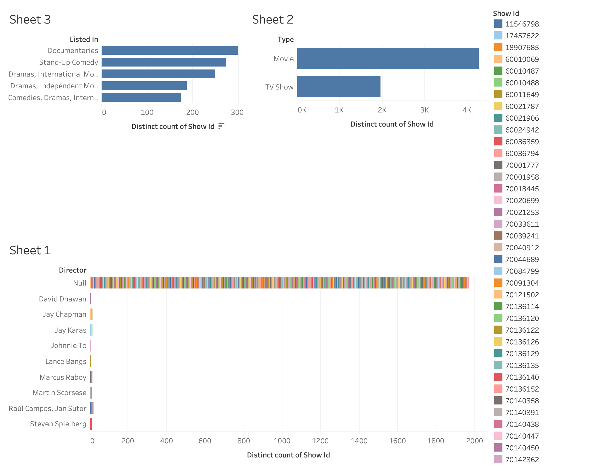

Análisis de Datos
Este dashboard ofrece un análisis detallado de las películas y series de Netflix, destacando géneros, directores y tipos de contenido.
Un vistazo moderno a los datos de Netflix
Este dashboard ofrece un análisis detallado de las películas y series de Netflix, destacando géneros, directores y tipos de contenido.